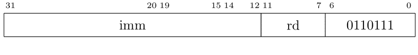

כרמי מרימוביץ
אתר אישי
קבועים שאינם קטנים מספיק אבל אינם עצומים
עבור קבועים שלא יכולים להיכנס ב-12 ביטים אבל יכולים להיכנס ב-32 ביטים יש פקודה שעוזרת לקצר תהליכים. נניח שצריך לטעון את הקבוע ABCDEF01 לאוגר. אפשר לשים אותו במילה בזיכרון ולטעון משם. יש לזה תקורה כמובן. לטעון כתובת לאוגר דורש פקודות... הפקודות שיש לנו מאפשרות לטעון את הקבוע באופן הבא.
addi x1, zero, 0xABC
slli x1, x1, 12
ori x1, x1, 0xDEF
slli x1, x1, 8
ori x1, x1, 0x01
זה פתרון לא רע, אם כי איטי. כיון שההנחה היא שקבועים כאלה הם נדירים אזי ההשפעה על הביצועים של רצף כזה אמורה להיות זניחה. למרות זאת, מתכנני המעבד הוסיפו פקודה כדי לאפשר הטענה של קבוע כזה בשתי פקודות מכונה בלבד.
שימו לב שמדובר פה בפשרה. למרות הנדירות הוחלט להוסיף פקודה כדי לשפר את היעילות.
הפקודה שהוספה,
lui,
מטעינה קבוע בגודל 20 ביטים אל ביטים
12-31 של אוגר המטרה.
ביטים 0-11 מאופסים.
לפיכך הטענת הקבוע הקודם נראית כך:
lui x1, 0xABCDE
ori x1, x1, 0xF01
בהחלט יותר מוצלח. הפקודה שייכת למשפחה U כלהלן: 